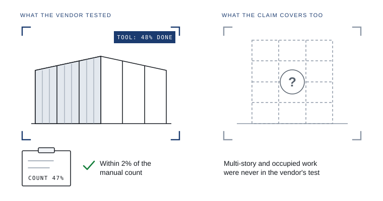

Construction: checking AI claims before you rely on them
For owners, builders and public works departments. The Casebook has 1 public case from construction where an AI error caused harm.
What the AI did
What came of it
What kind of record backs each case
Each case is counted under the record behind it, because a court's finding and a settlement don't prove the same thing. The Casebook names no one and gives no dollar amounts. As of November 23, 2026.
- An admission
- The company, agency or person involved said so in public.
- 1
Construction already checks the builder. Not yet the software
We found no US construction rule that requires an outside check of an AI vendor's claim. What construction does have is inspectors who don't work for the builder, written into contracts and building codes. That is the model for checking an AI claim, and these are the rules an owner, builder or public works department can point to.
- Special inspections. Virginia's building code requires a special inspection statement before a permit is issued on covered projects, and requires the special inspector to be independent of the contractor doing the work.
- Federal construction contracts. FAR 52.246-12 requires the contractor to keep inspection records, make them available to the government, and support required inspections and tests. It binds when it is in the contract.
- Surveyors buying AI. Outside the US, RICS's professional standard on the responsible use of AI in surveying, in effect since March 9, 2026, requires members to make requests for information from AI suppliers in writing and to record how far a system was tested for fitness for purpose before buying it.
Where an outside check fits work you already do
- Like any other submittal. Treat the vendor's claim the way you treat a concrete or steel submittal: name what it must meet, have someone who doesn't work for the vendor check it, and keep the report in the project file.
- Before you sign. Make the vendor's evidence for each claim you'll rely on a required submittal, and have it examined before you sign. See the sample requirement.
- Before it drives payment. Before automated quantities, progress tracking or a schedule-risk score is used to approve payment or change work, have the claim behind it examined.
- Kept in its lane. The finding covers the software claim. Required physical inspections and design approvals stay with the professionals appointed to them.
You can start with a pilot: a first look at one AI product, for a fixed $9,000.
What a check could look like in construction
Made up for this page. No real product or company. Each claim gets the same two findings, signed by the examiner and released by a second reviewer.
The claim
"Our site-photo tool measures percent complete within 2% of a manual count."
Finding 1, how far the evidence reaches: Sound, but short of the claim. The vendor's comparison holds up, but it covered four single-story warehouse jobs. The claim is made for any building type.
Finding 2, sound evidence the claim is false: None found inside the claim's scope. The evidence doesn't reach multi-story or occupied work.

You can require an outside check
If your decision rests on what a vendor says its AI product does, you can make an outside check of that claim a condition of the purchase, the policy or the deal. The report comes only to you.
Other industries
Government · Policing and courts · Schools · Healthcare · Insurance · Banking and markets · Legal · Transportation · Energy and industry · Hiring and work · News and publishing · AI labs · Software and agents · Customer service